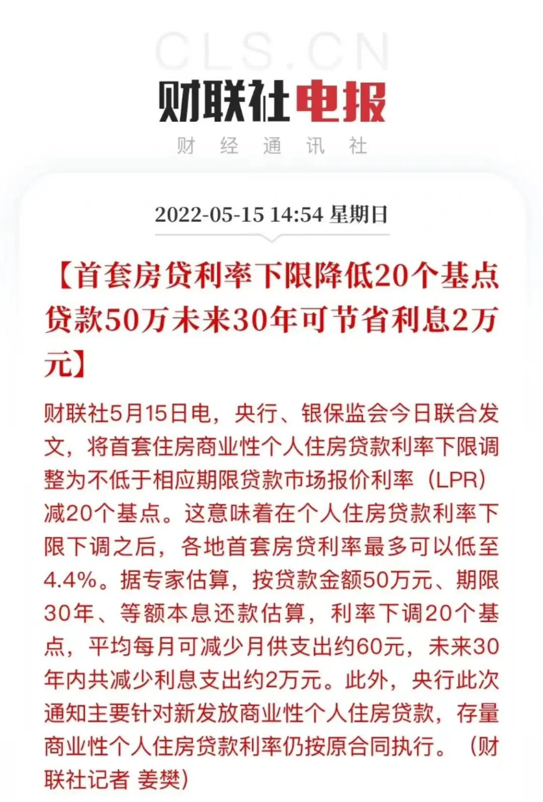
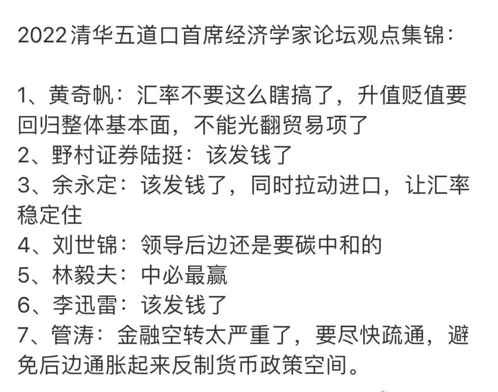
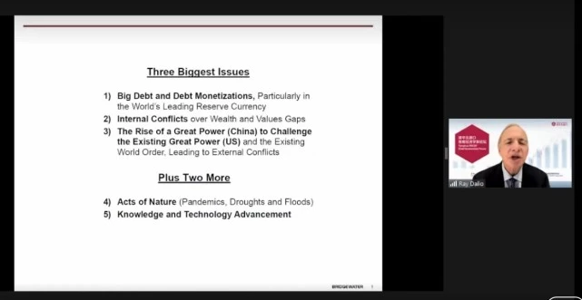
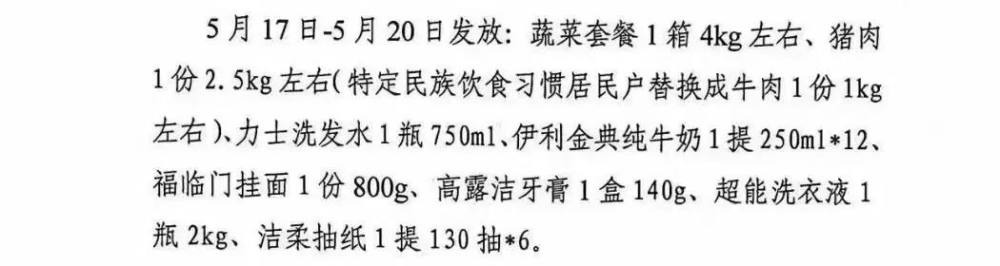
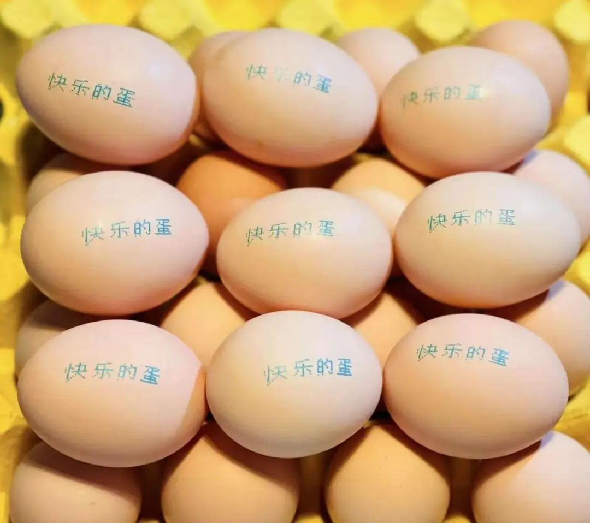
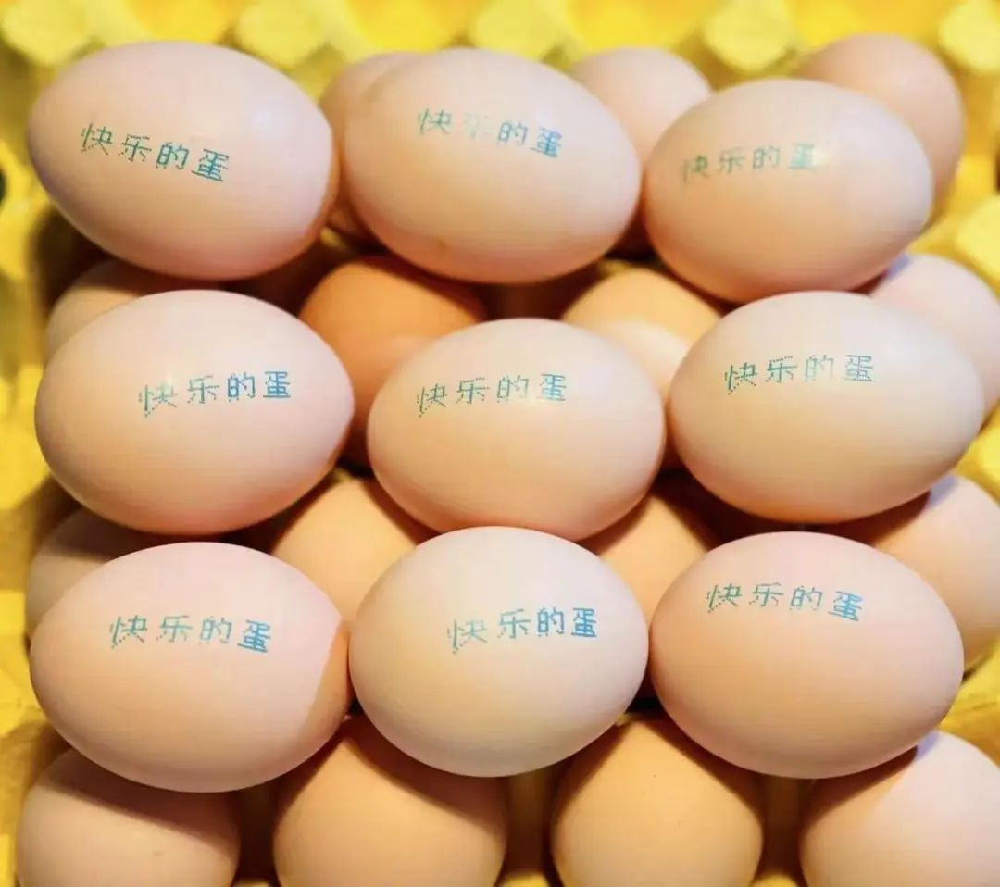
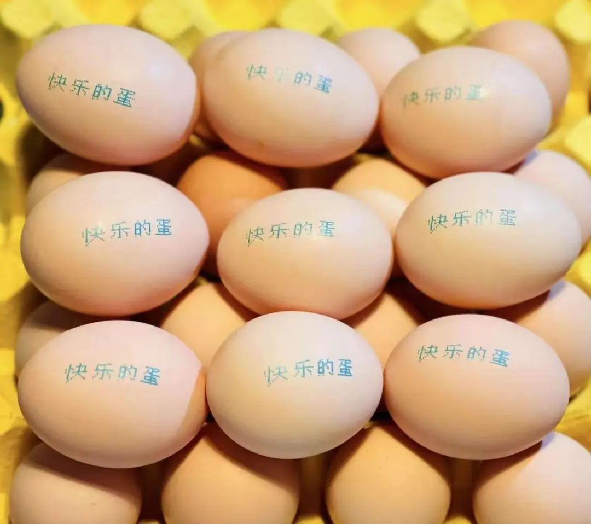

不涨价的房子没人要
原创 V姐万事屋 V姐来了 2022-05-16 23:29 原文链接(长) 原文链接(短)Hi，我是V姐。
昨天央行出了个政策，把首套房的LPR下限下调了20个基点。

也就是你如果现在买房，还是首套，能比之前少还一些利息。
至于已经贷款了的朋友，这个政策暂时跟大家没有关系。不过呢，这是个信号，针对地产定向降息的信号。
既然降都降了，为了释放消费力，后面针对存量贷款进一步降息也不是不可能。具体的话，就要看本周的20号，央行会不会调整5年期以上的LPR利率。
如果你已经贷款，且选择了LPR浮动利率的，5年期以上LPR下降，那么到了重新定价日（每年1月1日），你的贷款也可以少还。
现在的日子，大家都不好过，尤其是低收入群体。我知道不少朋友，收入可能不到个税起征点，但是也背了房贷的。减税退费都惠及不到这个群体，希望能够减少一些房贷利息吧，这是实打实的减轻人民负担。
早上大盘高开了一下，然后就被4月金融数据砸下来了。
社融规模只有市场预期的一半，新增的企业和居民贷款都同比大幅减少。
降LPR的政策只是个开始，大家都清楚，要把经济拉上去，还是得靠地产。
目前政策的力度还不够，老百姓买房，是买涨不买跌的， **涨价才能去库存**。
很多人会说老百姓没钱，这话对也不对。
我们的储蓄率还是在40%以上，是世界上最高的几个国家之一，2倍于世界平均储蓄率。
储蓄高这个事情，对于经济是没有太大帮助的。钱要在市场里流通，才能够盘活经济。
但是目前不少人对于行情没有信心，在看跌的预期下，不愿意拿钱出来买房。一旦楼市开始加速上涨，你就会惊奇地发现，原来首付还是有这么多人能够凑出来。老百姓有没有钱，购买力几何，国家比你我有数多了。
上周六清华五道口首席经济学家论坛召开，国内外的经济学大咖云集一堂，坐而论道。
我看了那天的直播，之后在网上看到一张观点汇总的图，你别说，给他概括得八九不离十：

专家们对于 **刺激国内消费刻不容缓** 是有共识的，至少一半在呼吁发消费券，发钱。经济的血液流通不能断，要保市场主体，保住企业不倒闭，否则大家一块喝西北风。
再来就是 **强调中国货币自主和资产安全。**
黄奇帆认为中国的人民币发行锚定美元，绝非长久之计。一国的货币应该锚定在自身GDP的含税量上，锚定在自己的国债信用上，只有如此才能拥有属于自己的铸币税。只有有了自己独立的货币锚，有了自己的国债收益率曲线，才有真正自主的货币政策，国内一切金融资产的定价才有了基准。这个问题在当前日益复杂的国际博弈中显得越发迫切，需要研究。
余永定认为俄乌战争之后，美元信用是大打折扣的，我们应该减持美国国债，增持其他资产，取消出口优惠，内需拉动进口的方式来增加海外资产安全性。
还有一点共识，就是 **关于国际高风险的环境。**
这点桥水基金的雷达里奥，讲的很精彩：

他讲说呢，纵观过去500年，当以下三个力量齐头并进的时候，会出现高风险环境：
1、巨大的债务伴随巨大规模的债务货币化。
_说人话：美国这个主流货币国家，使劲印钱买自己的债务。_
2、巨大的内部冲突，财富和价值观的差距越来越大。
_说人话：大国内部撕裂得厉害，矛盾越来越严重，不往外转移没法弥合。_
3、其他大国的崛起，挑战现有的超级力量。比如中国的崛起。
_说人话：就许你吸全世界血，不许我人类命运共同体？不许那我就掀桌子了！_
雷达里奥说，“历史的过往告诉我们，当这三大力量齐头并进的时候，我们可能会有一个高风险的环境，这也是我们当今所处的社会现实和环境所面临的情况。”
整体上说呢，大佬们普遍认为，目前货币政策发力归发力，但是传导不畅，需求不足，导致钱放不出去。我们还是要专注解决国内的 **疫情、消费和产业升级** 三大块，才能把堵点疏通，也就无惧外界的挑战。
今天上海公布了复工复产的时间线，我一看新闻里的烟火气，仿佛一个娇羞的少女，忐忑地等待帅气的居委给我发出门证。
已经关了两个月的我，今天果然等到了居委的通知，没想到是新一轮物资发放：

朋友们，我的心情很复杂 就是说好马上出狱了，结果又给你发了牙膏洗发水
就是说好马上出狱了，结果又给你发了牙膏洗发水 然后大概也是为了舒缓我们的心情，他们发的鸡蛋上还印了字：

有心了，感动，要么我给你们唱首歌吧：
然后大概也是为了舒缓我们的心情，他们发的鸡蛋上还印了字：

有心了，感动，要么我给你们唱首歌吧：
就是说好马上出狱了，结果又给你发了牙膏洗发水
然后大概也是为了舒缓我们的心情，他们发的鸡蛋上还印了字：

有心了，感动，要么我给你们唱首歌吧：